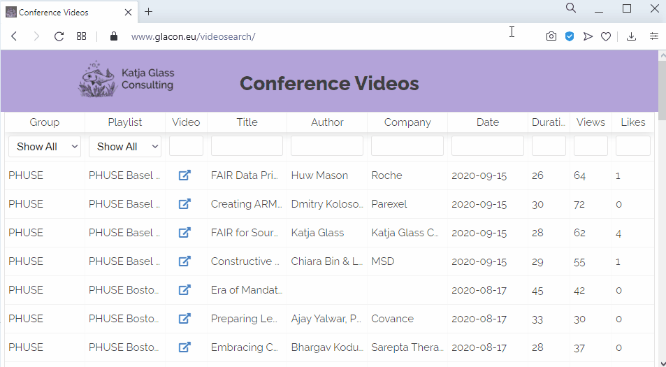

We need more collaborations and exchange of experiences and programming. Having open source solutions would enable us to standardize the programming and creating standard and transparent programming processes for clinical study evaluations. Open source projects face many problems, but the potential is high when we start to share programs and processes.
I am more than pleased to perform any open source projects which will enable us a brighter future! Please contact me via info@glacon.eu to get further information or schedule a phone call.
I have launched a new web page: "Open Source Portal for Clinical Study Evaluations". A major missing gap is the findability of open source tools, scripts and macros. This page will close that gap. Do you want to support this project? Please provide input or become a sponsor! Get in touch with me via info@glacon.eu.
January 2021
The new SMILE library has been released. SMILE stands for Smart SAS Macros - an Intuitive Library Extension.
It contains SAS Macros to perform various task. Currently there is a macro to check URLs, download files
from an URL, a quite useful macro to support flat navigation panes for ODS PDF and a few mini-macros to quickly get the number of observations and similar.
More and more macros will be added. Detailed examples for PDF are provided.
January 2021
Version 2.0 of Reindeer is in preparation - PDF will become supported, a new title line containing "page x of y" is implemented,
the "todayDate" format will be fixed and other features will come.
March/April 2020
Version 1.1 of Reindeer is released which supports now the inclusion of graphics, ascii and RTF output into a Word template.
Next to ODS RTF also TAGSSETS.RTF output is supported. The tool is currently finished as no other features are requested.
February 2020
Reindeer - Result Render tool for SAS outputs is now released in
GitHub
in the first version!
The Reindeer Result Render open source tool contains a VBA macro which can be used to render multiple outputs created with SAS® into one Word document.
Currently the listing (.lst or .txt) and rtf outputs are supported. Detailed documentation is available in the file containing the macro as well called
"Reindeer.docm".
A follow-up project is already planned, so a next version supporting also graphics and other gimmicks will be available after development.
Thanks to ClinStat GmbH for taking the sponsorship!
January 2020
I have kicked off a the new open source project "Reindeer - A ResultRenderer Tool".
ClinStat GmbH is
sponsoring a project to render results from
SAS outputs like listings and RTF files into a Word document. The resulting tool is a VBA
macro which can simply be started through Microsoft Words.
The tool will be completely open source and using the MIT license! The first release is
planned in the first half of 2020, so look out for updates!
October 2020
I have created a searchable web application to provide an easy entrance to the videos of interest from PHUSE and R in Pharma.
The web application is a very generic framework where you can plugin data (in this case the video details)
and metadata (what information should be displayed and linked). I would be happy to share this as #OpenSource, looking for funding!

January 2020
Many additional content has been included into the portal. 409 single
scripts and macros from five different tool groups
can be searched for. Additionally complex training videos has been created and made
available through my YouTube channel
and are also linked on the portal.
June 2019
A new web page is opened to make open source solutions findable. The
project is looking for sponsorship to allow for further updates and enhancments. As
available tools and solutions are tough to find and information is hardly in a standard
format, a lot of work is going into this project.
January 2020
Due to missing sponsors and other ongoing projects, this project is
put on hold.
June 2019
A first sponsoring company has been found! Two more to go for the project
Kick Off!
April 2019
Recruitment for funding companies is not running very well.
Advertisement could be optimized. I displayed a poster on the PhUSE SDE in Heidelberg about
my personal open source selection. The interest is high to have open source and people
understand that especially for the very important huge parts of a project, namely
documentation, training, communication and also validation, funding would be require to
receive a specific level.
I am thinking about changing the funding type from funding
to sponsoring which might be easier to get agreement within the single companies.
Furthermore I might switch the content to a more relevant task than test data
generation.
December 2018
The open source project for test data generation is looking for
funding contributions. When at least three companies are found for funding, the project will
kick of. A LinkedIn article was published and people are made aware of this project. Videos
are provided to explain the importance of open source collaborations, as well as the test
data generation project and scope.